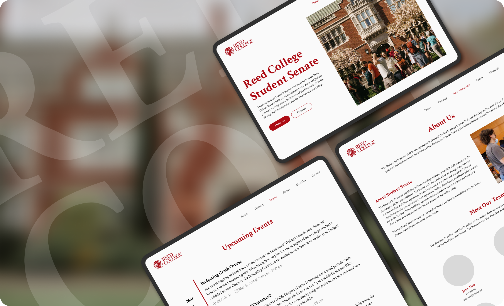
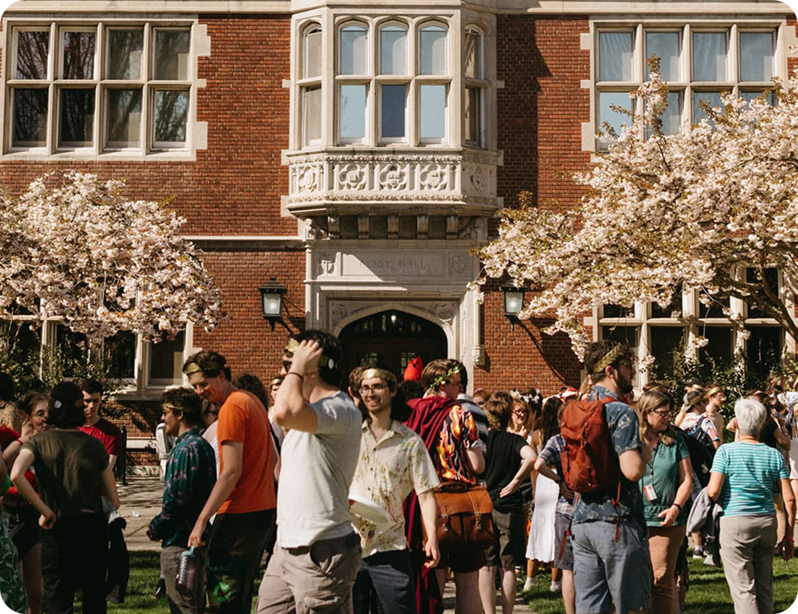
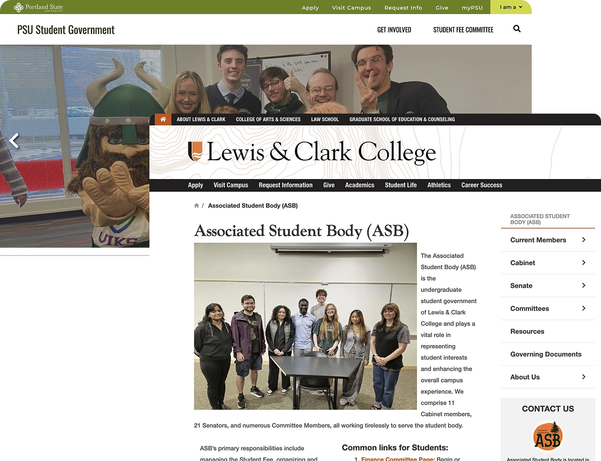
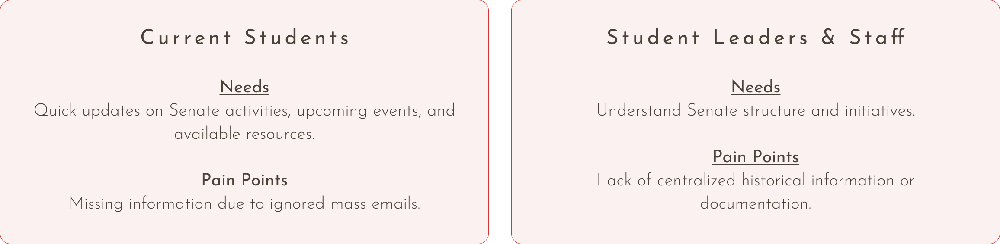
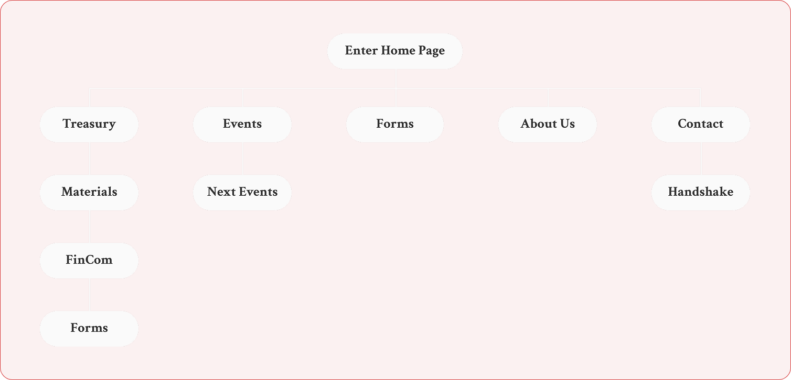
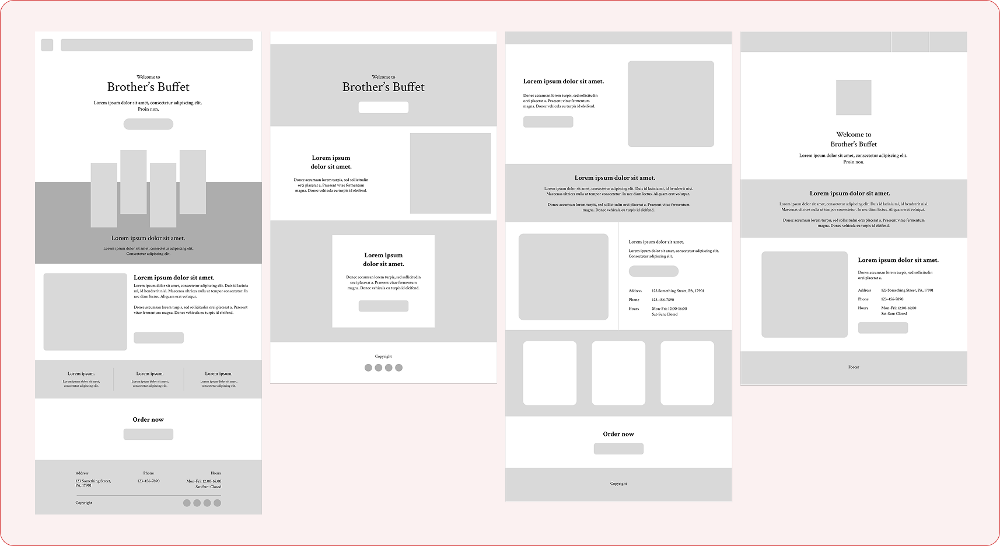
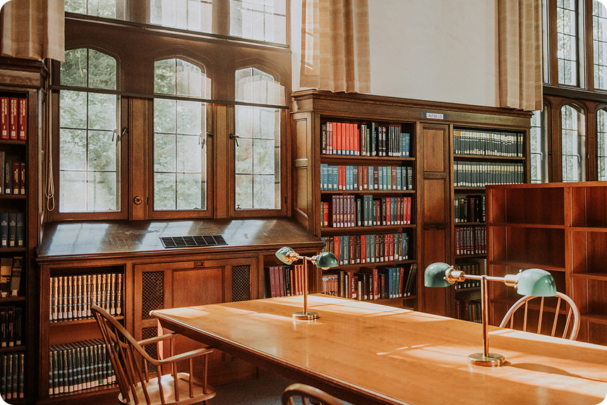
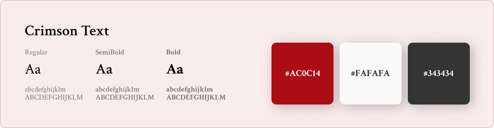
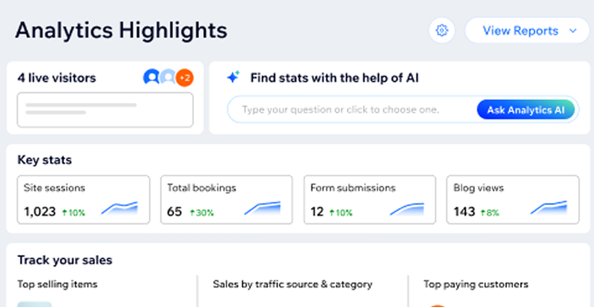

A centralized institutional student government website that organizes its announcements, meeting notes, events, and resources into an accessible experience.

ROLE
UI/UX Designer
& Developer
TIMELINE
2023-2024
(~1 year)
TOOLS
Figma
Wix
SKILLS
Web Design
Front-end Development

OVERVIEW
The Reed College Student Body Senate is the representative body of the Reed College Student Body for all its legislative, executive, and judicial purposes, representing the interests of students to the faculty, administration, and Board of Trustees. To better support the campus community, this project focused on creating a centralized, accessible platform where students could easily find announcements, meeting notes, events, and other essential Student Senate resources.
As the sole UI/UX designer and front-end developer, I led the project from wireframing and interactive prototyping through implementation. After designing the user experience, I brought the website to life using Wix and continued maintaining it for approximately one year, ensuring content remained up to date while supporting the evolving needs of both the Senate and its students.
01.
 OBJECTIVE
OBJECTIVE


Before the website’s creation, the Senate primarily communicated through mass emails. This system was inefficient and difficult to navigate, making important updates and event information often lost in cluttered inboxes.
To address this issue, I designed and developed a centralized website where students could easily access Senate announcements, meeting notes, events, and resources — all in one organized, accessible space.
02.
RESEARCH
I conducted comparative research by analyzing student government websites from nearby colleges. Many of these websites were content-rich but visually overwhelming, leading to poor readability and navigation fatigue.
From this, I wanted to ensure that clarity and simplicity were key. My goal became creating a design that felt approachable, organized, and familiar, with enough depth for those who wanted to explore further.

03.
PROCESS
User Personas
To guide design decisions, I identified and spoke with members from two main user groups:

Understanding the groups of people who would interact with the website was an important part of the design process. To validate these personas, I spoke with members from each group to learn what information they accessed most frequently, what features they found valuable, and what they would expect from a centralized Senate website. These insights helped guide decisions around navigation, content organization, and information hierarchy throughout the redesign.
While both groups shared the need for easy access to information, they approached the website with different priorities. Current students primarily looked for announcements, events, and resources, while student leaders and staff needed a centralized location to manage and reference Senate initiatives, documentation, forms, and historical records.
User Flow
The user flow was designed to be simple so it could allow users to quickly navigate to the information most relevant to them. The homepage serves as a central hub, providing clear pathways to key sections such as announcements, meeting notes, events, resources, and Senate information.

Low-Fidelity Wireframes
I created a series of low-fidelity wireframes to explore layouts, navigation, and accessibility before moving into visual design. Sharing these early concepts with students and the Student Senate members helped gather feedback, validate design decisions, and refine the overall user experience before developing high-fidelity mockups.

04.
DESIGN SYSTEM
Visual Identity

I wanted to maintain visual continuity with Reed College’s existing branding, including its typography, color palette, logo, and design principle.
This appracoh would make the website feel like an extension of the college’s digital ecosystem, and not a separate entity.
Typography

05.
USER RESEARCH
Throughout development, I conducted informal usability tests by inviting fellow students to explore the site, focusing on readability, color contrast, and navigation intuitiveness.
Improvements made:
Adjusted contrast ratios for accessibility.
Refined navigation labels for clarity.
Increased spacing between sections to reduce visual strain.
06.
WIX
After finalizing the design, I implemented the website using Wix.
Beyond development, Wix provided valuable insights through its built-in analytics and website management tools. By monitoring visitor behavior, page traffic, and user engagement, I was able to better understand which content users interacted with most and identify opportunities for future improvements.

07.
KEY TAKEAWAYS
1. User Opinions Matters!
One of my biggest takeaways from this project was the importance of understanding how different user groups interact with the same product. Although current students and Senate members shared the same platform, their goals were very different, emphasizing the value of designing navigation and content around user needs rather than assumptions.
2. Design to Development.
Bringing the project from wireframes to a live website gave me valuable experience translating design decisions into a functional product using HTML, CSS, and JavaScript. Maintaining the website over the following year also taught me that good design extends beyond launch—it should continue to support users as content and needs evolve.
See my other works!